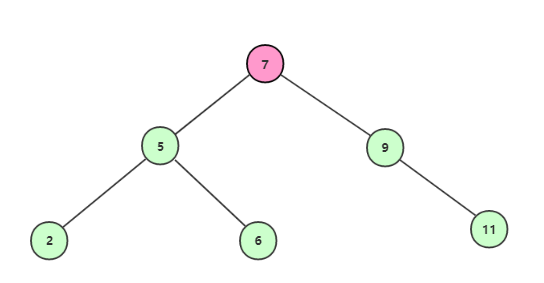

原文连接:https://www.cnblogs.com/ytao-blog/p/11789843.html
二叉查找树是将一组无序的数据构建成一颗有序数据的树，其设计思想与二分法类似。很好的提高了海量数据查找效率，使得由从头遍历到尾的方式转为二分查找的方式，时间复杂度从O(n)降低为O(log(n))。
概念
- 结点：树上的每个元素。
- 根结点：没有父结点的结点。
- 父结点：结点的上一级结点。
- 子结点：结点的下一级结点。
- 叶子结点：没有子结点的结点。
- 兄弟结点：拥有同一父结点的相邻结点。
- 结点的度：一个结点中拥有子结点的个数。
- 树的度：树上最大结点的度。
- 结点的层次：以根结点为1，每深入一个子结点层次加1。
- 树的高度：树中最大的结点的层次。
特性
- 左子树所有的结点值均小于，等于根结点值或为空。
- 左子树所有的结点值均大于，等于根结点值或为空。
- 左、右子树也分别为二叉排序树。
- 没有键值相等的结点。
构建
构建二叉查找树，主要把握几条原则，小于当前结点的在左边，大于的在右边，相等的不予处理。但是情况下结合实际业务需求，也可在相等时放在左结点或右结点，但是必须统一规则，不能左右都存在相等的。
创建结点对象：
package com.ytao.bst;
/**
* Created by YANGTAO on 2019/11/3 0003.
*/
public class Node {
private Integer value;
private Node leftChildren;
private Node rightChildren;
public Integer getValue() {
return value;
}
public void setValue(Integer value) {
this.value = value;
}
public Node getLeftChildren() {
return leftChildren;
}
public void setLeftChildren(Node leftChildren) {
this.leftChildren = leftChildren;
}
public Node getRightChildren() {
return rightChildren;
}
public void setRightChildren(Node rightChildren) {
this.rightChildren = rightChildren;
}
public Node(Integer value) {
this.value = value;
}
}
创建树的实现：
package com.ytao.bst;
/**
* Created by YANGTAO on 2019/11/3 0003.
*/
public class BuildBST {
private Node rootNode = null;
public Node build(int[] vals){
// 遍历所有数据，每次都需从根结点开始寻找左或右子节点为空的位置添加
for (int val : vals) {
this.assemble(rootNode, val);
}
return rootNode;
}
private void assemble(Node node, int val){
// 创建根结点
if (node == null){
rootNode = new Node(val);
}else{
// 根据左小右大特性判断
if (val < node.getValue()){
Node leftNode = node.getLeftChildren();
// 如果左子结点为空，就添加为当前结点的左结点，否则继续递归下去
if (leftNode == null){
node.setLeftChildren(new Node(val));
}else{
this.assemble(node.getLeftChildren(), val);
}
}else{
Node rightNode = node.getRightChildren();
// 如果右子结点为空，就添加为当前结点的右结点，否则继续递归下去
if (rightNode == null){
node.setRightChildren(new Node(val));
}else{
this.assemble(rightNode, val);
}
}
}
}
}使用[7,5,9,2,11,6]测试是否满足我们创建树的要求：
public static void main(String[] args) {
int[] vals = {7,5,9,2,11,6};
Node node = new BuildBST().build(vals);
System.out.println(new Gson().toJson(node));
}测试结果满足我们要求
{
"value": 7,
"leftChildren": {
"value": 5,
"leftChildren": {
"value": 2
},
"rightChildren": {
"value": 6
}
},
"rightChildren": {
"value": 9,
"rightChildren": {
"value": 11
}
}
}查找
假设从一百万个数字中获取值为88的数据，如果我们使用遍历的方式，最糟的情况就是排在第一百万个位置的时候，需要我们遍历一百万次才能获取到数据，这就是我们最不想遇到的情况。这时将一百万个数据构建成二叉查找树，我们就可通过树快速找到我们想要的数据。
由于设定一百万个数据比较多，这里我们举例当前拥有数据[7,5,9,2,11,6],我们要找出其中的6。
使用循环遍历所有数据的方法，我们需要6次遍历 7->5->9->2->11->6。
使用二叉查找树查找时，首先构建好的二叉查找树的结构如图：
从根结点开始查找；

获取根结点7，不等于6，且6<7，所以继续找左子结点；
获取到结点5，不等于6，且6>5，所以继续找右子节点；
最终获取到结点6，满足我们需要的条件。所遍历的数据为 7->5->6。
代码实现查找：
package com.ytao.bst;
/**
* Created by YANGTAO on 2019/11/3 0003.
*/
public class SearchBST {
public Node search(Node node, int val){
// 如果结点为空，说明是没有了符合的结点
if (node == null)
return null;
int nodeVal = node.getValue();
// 如果结点上的键值相等，就是我们需要找的结点
if (val == nodeVal){
return node;
}else if (val < nodeVal){ // 如果小于结点的值，那么一定在结点的左子树中
return this.search(node.getLeftChildren(), val);
}else{
return this.search(node.getRightChildren(), val);
}
}
}
插入
二叉查找树的插入规则，必须是要插入后的结点是作为叶子结点。现在向上面的树中插入10，根据上面所分析到的规则，为确保二叉查找树的完整性，最终的插入流程为7->9->11->10：
代码实现：
package com.ytao.bst;
/**
* Created by YANGTAO on 2019/11/3 0003.
*/
public class InsertBST {
public void inesrt(Node node, int newVal){
// 当结点为空是，说明是作为根结点
if (node == null){
node = new Node(newVal);
}
int nodeVal = node.getValue();
// 如果小于结点的值，插入到左子树中，大于就插入右子树中
if (newVal < nodeVal){
Node leftNode = node.getLeftChildren();
// 为空时，说明为叶子结点，可插入
if (leftNode == null){
node.setLeftChildren(new Node(newVal));
}else {
this.inesrt(leftNode, newVal);
}
}else if (newVal > nodeVal){
Node rightNode = node.getRightChildren();
if (rightNode == null){
node.setRightChildren(new Node(newVal));
}else {
this.inesrt(rightNode, newVal);
}
}else {
// todo 相等时，可根据具体业务处理，放弃，或在左右树中选择一个
}
}
}
删除
删除结点分为多种情况，其中主要分析的：
叶子结点
删除叶子结点，将所要删除的叶子结点直接删除便可，比如删除结点6。

单子结点的结点
被删除结点，如果只有一个子结点，那么被删除结点删除后，该结点的子结点补上其位置，比如删除结点9。

存在左右子结点的结点
为了更加清楚表达删除存在左右结点的结点，先向树中多添加3个结点8，10，15。然后删除结点9。
这里的解决方法就是，删除9后，可以用前驱结点或后继结点补上。前驱结点为左子树中最大的结点，后继结点为右子树中最小的结点。
现在以后继结点补上的方案为：
后继结点补上删除后的结点：
完成删除，后继结点补充上后：
代码实现：
package com.ytao.bst;
/**
* Created by YANGTAO on 2019/11/3 0003.
*/
public class DeleteBST {
public Node delete(Node node, int delVal) {
// 为空时，代表叶子结点
if (node == null){
return node;
}
int nodeVal = node.getValue();
Node leftNode = node.getLeftChildren();
Node rightNode = node.getRightChildren();
// 删除的结点，与遍历到的当前结点做比较，小于，大于或等于
if (delVal < nodeVal){
Node tempLeftNode = delete(leftNode, delVal);
node.setLeftChildren(tempLeftNode);
} else if(delVal > nodeVal){
Node tempRightNode = delete(rightNode, delVal);
node.setRightChildren(tempRightNode);
} else {
// 删除的结点与当前遍历到的结点相等时
// 并且左结点为空时，返回右结点去补上删除的位置，反则返回左结点补上
// 说明删除结点为单子结点的情况
if (leftNode == null){
return rightNode;
} else if (rightNode == null){
return leftNode;
}
// 通过查询最小右结点，获取后继结点
Node minNode = minNode(rightNode);
int minNodeValue = minNode.getValue();
node.setValue(minNodeValue);
// 删除后继结点
Node tempRightNode = delete(rightNode, minNodeValue);
node.setRightChildren(tempRightNode);
}
return node;
}
private Node minNode(Node node) {
// 一直寻找最小值，知道左子节点为空为止
Node leftNode = node.getLeftChildren();
if (leftNode != null)
return minNode(leftNode);
return node;
}
}
至此上面三中情况都予满足。
总结
上面对二叉查找树的操作都已介绍，但是正真使用中，是要结合实际业务进行相关调整来满足自己的需求，不然，一切的优化手段都是假把式。二叉查找树虽然好用，但是它也是有一定要求，在数据量不大的情况下，使用遍历的方式，更加符合我们的要求，所以它使用场景一般是在海量数据的查询，用来提查询效率。
个人博客： https://ytao.top
我的公众号 ytao